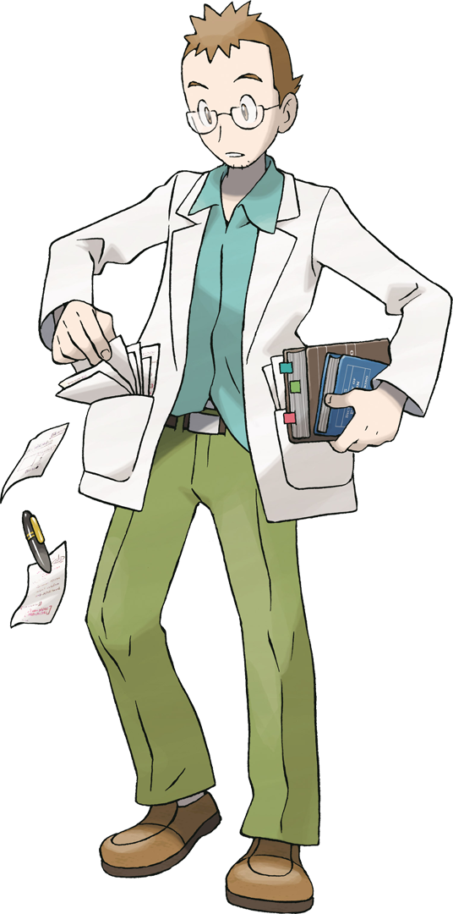

What is the "Original Series"
The Original Series is referred to as Ash's journey throughout the Kanto and Johto region. This is because the drawn artstyle between the regions in the series were identical. As well as Ash wearing the exact same outfit and travelling with the exact same friends.
Since many features are directly borrowed from Kanto to Johto, this page will cover both regions at once. Other pages will purely focus on their turn of events in that specific region/arc.
About the Kanto region
The Kanto region is the first region that Ash Ketchum explores in his journey to become a Pokemon Master. It features the original 151 Pokemon that could be first discovered in the games Pokemon Red, Blue, Green and Yellow. They are formally known as "Generation 1".
The Kanto region is based off Japan, specifically the Kanto region of Japan.
There are 2 seasons that take place in Kanto region: Indigo League and Adventures in the Orange Isle. Indigo League follow's Ash's main journey in the Kanto, while Adventures in the Orange Isle follows the side journey in the Orange Isle.
About the Johto region
The Johto region is the second region that Ash Ketchum explores in his journey to become a Pokemon Master. It added an extra 100 Pokemon that could be encountered in the games Pokemon Gold, Silver and Crystal. These games are known as "Generation 2"
The Johto region is also based off Japan, this time the Kansai region of Japan.
There are 3 seasons that take place in the Johto region: The Johto Journeys, Johto League Champions, and Master Quest, which all follow Ash throughout different parts of the region.
The beginning of Ash's journey
Turning the age of 10 is a rite of passage in the Pokemon world. And for Ash Ketchum, it meant beginning his journey as a Pokemon trainer. Picking up his eventual lifelong partner, Pikachu, he leaves his hometown of Pallet Town and meets his soon to be friends Brock and Misty.
During his journey, he is tasked with defeating powerful trainers and catching Pokemon. However, his journey isn't made easy with his rival, Gary, trying to one-up Ash at every step. Additionally, he has to deal with the nefarious Team Rocket, an evil organisation who try to steal other people's Pokemon.
After many challenging battles and conflics, Ash was only a few steps away from becoming a Pokemon champion. Devasatingly he loses in a critical battle and is eliminated from the regional tournament. Not letting his loss in Kanto bring him down, he decides to explore the Orange Isle with a temporary ally, Tracy.
Soon after returning from the Orange Isle, Ash is instructed to go to the Johto region on an errand for Professor Oak. Misty and Brock, as well as Gary and Team Rocket, also follow him to Johto. There he decides to participate in it's regional tournament too, however also falling short before returning to Kanto.
(Pictured is the outfit that was worn by Ash in the Original Series)
The characters
Throughout the Original Series, Ash has met friends and foes alike. Use the menu to be sent to a specific character or keep scrolling to read them all.
Please note that this is not an extensive list of characters which appear in the Original Series. Only prominent characters have been featured in this list. The full list of characters can be found on the wiki.
Professor Oak

Professor Oak is the professor of the Kanto region. His job is to help start trainers on their journey to become a Pokemon trainer by giving them their first Pokemon and a Pokedex, an encyclopedia which is filled in upon encounter of a Pokemon.
Throughout Ash's journey, Professor Oak has given him countless advice so that he may one day become a Pokemon master. Professor Oak is also the grandfather to Ash's rival, Gary.
Professor Oak's lab can be found in Pallet Town, which happens to be the same town which Ash lives in.
Did you know? Every Pokemon professor is named after a type of tree!
Gary Oak
Gary was Ash's childhood friend and always seemed to get the upperhand in anything they did together. Always being one step ahead, he constantly taunts Ash during their journey. As rivals, they frequently crossed each other's paths and tried to boast themselves as the superior trainer.
Throughout the journey, Gary soon developed some respect for Ash, seeing how Ash has overcome problems that he has encountered. Gary also travelled to Johto however, becoming an assistant researcher at the end of his journey.

Professor Elm

Professor Elm is the professor of the Johto region. He is often attributed to being the expert in Pokemon abilities, and having discovered Pokemon eggs. Just like all professors, Professor Elm is tasked with beginning a trainer's journey in the Johto region by gifting them with their first Pokemon and a Pokedex.
Professor Elm's lab is positioned in New Bark Town, which is where all trainers in Johto begin their Pokemon journey. This happens to be the first place Ash which across in order to register for the regional tournament in Johto.
Misty
Misty was one of the very first characters that Ash encounters in his journey. After an unfortunate encounter that destroys Misty's bike, she decides to join Ash throughout his journey to become a stronger trainer for herself. She is a trainer who specialises in water type Pokemon.
After Ash's journey through the Kanto region, she remained by his side until the end of the Johto when she was called to return to Kanto.

Brock
Brock is another character who joins Ash in his journey. After Ash battles him for the first time, having lost that battle, then rematching and succeeding, Brock decides to venture out with Ash so that he can chase his dream to become a Pokemon breeder. Brock is a trainer who specialises in rock type Pokemon.
While having temporarily left Ash during his journey through the Orange Isle, Brock returned to his side throughout the next few regions. Brock returned to Kanto at the end of Sinnoh.
Tracy Sketchit
Tracy was only a temporary companion for Ash during the Orange Isles. He is a Pokemon watcher and somewhat filled in Brock's role in the trio.
The only currently known reason for having Tracy replace Brock was due to the belief that Brock could be seen as a racist stereotype when the Pokemon Series went overseas (Initially, it only aired on Japanese television). Just to be on the safe side, the artists created Tracy as a replacement for Brock. However, this was no longer a concern when there were no complains about Brock for the overseas release.
After Ash's journey in the Orange Isle, Brock returned to the group while Tracy became an assistant for Professor Oak. Out of all of Ash's travelling companions, Tracy has seen the least amount of screentime.
Team Rocket
Team Rocket is the evil organisation that is positioned in Kanto and Johto. Their leader is the mastermind, Giovanni, who commands Team Rocket and uses his underlings to do his bidding. He has entrusted the assistance of agents James, Jessie, and their talking Pokemon, Meowth, to follow Ash and to capture his Pokemon, however failing on multiple occasions.
Team Rocket is one of the only commonly reoccuring charcters throughout the entire series, and are generally viewed as comic relief.